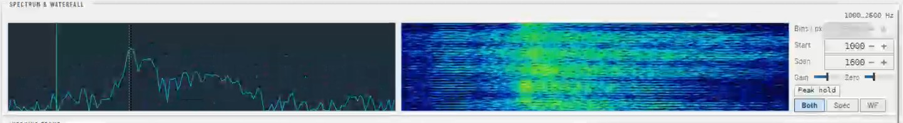

A rewrite of YONIQ
Slow-scan TV on Windows, Linux and macOS
Scanline Studio sends and receives SSTV pictures over amateur radio. It handles all 43 MMSSTV-family modes, so you can swap pictures with stations already using them. It's a rewrite of YONIQ, which is a fork of MMSSTV, the long-running Windows SSTV program. Tune your radio to an SSTV frequency and it picks out the mode and draws the picture as it comes in.

Free and open source for Windows, Linux and OSX
All 43 modes
Each one was checked against YONIQ's own encoder and decoder code, so a picture sent from Scanline Studio decodes on other MMSSTV-family stations, and theirs decode here.
Works with any rig Hamlib supports
Rig control goes through Hamlib, the open-source rig-control library, so any radio it knows works here. YONIQ used its own serial code for a fixed list of rigs, plus OmniRig on Windows.
- Linked Hamlib loads the
libhamlibinstalled on your system and runs inside the app. It has the widest rig list. - rigctld connects to a Hamlib daemon running on this machine or elsewhere on your network, so several programs can share one rig.
- flrig and OmniRig (Windows), if you use them.
- Rig polling runs in the background, so a slow radio never freezes the decoder.
A template editor for QSL-style pictures
Set a layout up once, then reuse it whenever you need it, even in the middle of a contact.
- Text, box, image and line elements. Each one has its own style, stacking order and position on the canvas.
- Macros fill in your callsign, grid square and the current frequency and mode.
- Ready Rack is a strip of nine pinned slots for quick recall. It sits on top of a searchable Template Library that you can view as a grid or a list.
- Your existing YONIQ
.mtmtemplates import directly. - Distort boxes and images in perspective, and let text grow to fill its box.
Search everything you've received
Every picture you receive goes into a history that's linked to your logbook, in place of YONIQ's single binary history file.
- It's a standard SQLite database, so you can browse it and search it.
- Send to TX moves a received image straight into the Template Editor and looks up the QSO it belongs to.
- A Logged indicator shows whether a picture already has a log entry.
- Re-decode this frame runs the decoder again on a saved recording. Open audio file location takes you to the raw capture.
Also included
Audio recording
You can save each reception's raw audio as a .wav file next to its picture and re-decode it later.
Logbook and QRZ
You can export ADIF, forward logged QSOs over UDP to GridTracker2, N1MM and Log4OM, and look up station details on QRZ.
Languages and themes
The interface comes in English and German, with more languages planned, and in light and dark themes. Change either in Options.
Download
Releases are on GitHub, and the user guide opens right here on this page.
Latest release
Pick the file for your system on the releases page. To go on the air you need a radio and a sound card connected to it, and rig control is optional. No radio handy? Open a saved .wav recording and decode that.
About Scanline Studio
Why this exists
MMSSTV goes back to 2000, and YONIQ is a fork of it. Both only run on Windows, and Linux hams have had QSSTV instead. Scanline Studio brings the MMSSTV family to Windows, Linux and macOS and keeps what goes out over the air exactly the same.
It's free and open source, under LGPL-3.0-or-later like the code it grew out of.
How it's built
Scanline Studio is developed with heavy use of AI-assisted engineering (Claude Code), which helped with the C++ to C# port. The AI doesn't decide what's correct, though: every mode is checked against YONIQ's own code. That rule exists because an early Scottie port got its channel order wrong by inferring it from the receive code, and a round-trip test passed anyway because the encoder and decoder were wrong in the same way.
Found a mismatch or a bug?
If a mode decodes differently from MMSSTV or YONIQ, or sends something another station can't read, that's a bug. The same goes for anything else that doesn't work the way you'd expect. Please open an issue.